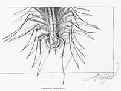
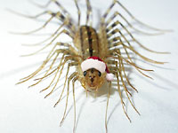

Мухоловка
Домашняя сколопендра
Портрет многоножки сделан в номере гостиницы Ростов на 6 этаже. Я долго не давал ей убежать за плинтус. Наконец она устала, и остановилась на белом листе для короткой фото-сессии. Использовался тогда совсем новый фотоаппарат Nikon cp4500. После фотографирования мухоловка убежала.
Сначала, когда я её увидел, то не придумал ничего лучшего, как поймать мухоловку в стакан. Фото в стакане вышли, к счастью, неудачно.

Портрет по фото 887x596
Домашняя сколопендра - полезное животное. Не всем нравится её вид, но людям вообще не угодишь. Некоторые не боятся собак, но боятся мышей.
Благодаря любви к фотографированию, и хорошим камерам для макросъёмки всё больше любителей природы фотографируют цветочки, насекомых, паучков - то, что обычно мы не можем разглядеть в подробностях. Не только цветы, но и жучки оказались красивыми. Теперь и художники рисуют не только цветы и птичек, но и жуков и пауков. Большой прогресс гуманизма и любви к природе.

( Дед Мороз 500x400 )
(
Детектив 600x480
)
Фотографии насекомых и вот этой конкретной домашней сколопендры используют в мотиваторах, демотиваторах и в поздравительных открытках.
Многоножка Мухоловка часто встречается на юге России и Украины. В доме она может охотиться на тараканов, сверчков, пауков , муравьёв , клопов. В некоторых странах мухоловок оберегают.
Строго говоря, Мухоловка - не сколопендра. В Крыму есть настоящие сколопендры, например, Кольчатая сколопендра ( Scolopendra cingulata ). Любители насекомых держат дома опасную Сколопендру гигантскую ( Scolopendra gigantea ), которая может убить мышь.

Мухоловка не "кусает", а "жалит" свою добычу, впрыскивая яд. Острые ядовитые "клыки" видны на увеличенной фотографии. Домашняя сколопендра человека не кусает, но тонкую кожу может прокусить, если, например, долго держать в руках. Укус ядовитый, но болит меньше, чем укус пчелы.
Эволюция позаботилась, чтобы яд мухоловки как и яд шершня эффективно действовал на насекомых, а не на млекопитающих, потому что они охотятся на насекомых. А вот, например, пчела защищается от похитителей мёда, и её яд лучше приспособлен, чтобы вредить лесным животным (в том числе людям), а не насекомым.

Яд больших пауков и большой сколопендры опасен потому, что кроме насекомых они могут нападать на лягушек, ящериц, птенцов, которые генетически ближе к человеку, чем насекомые.
По сравнению с красивым портретом на этой странице Мухоловка сбоку сфотографирована с немного большим увеличением и не поместилась в кадр. По этому фото можно изучать строение тела насекомого. Тело мухоловки состоит из 15 члеников. На каждом по 2 ноги. В том числе ноги-челюсти на голове, и ноги-усики на хвосте. Интересно, что "панцирь" на спине мухоловки имеет 7 пластинок - по 2 на каждый сегмент тела. У мухоловки большие глаза и хорошее зрение. Это одна из причин, почему она так быстро бегает - это не просто убегание - она видит куда или за кем бежит.

Мухоловка Scutigera coleoptrata относится к классу "губоногих" ( Chilopoda ), как и сколопендра. Слово Chilopoda происходит от греческого kheilos "губа" и латинского pod "нога". Вероятнее всего это название связано с тем, что самые передние ножки сколопендры превратились в часть челюсти. Остальны ножки используются по основному назначению. Они очень изящные и тонкие, так как их много, и на каждую приходится крохотная часть веса насекомого - сотая или десятая часть грамма. При этом площадь касания большая. Мухоловка слышит своими ножками вибрацию от суеты тараканов на расстоянии метр, а может и больше.


{kind=link}